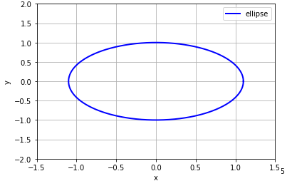
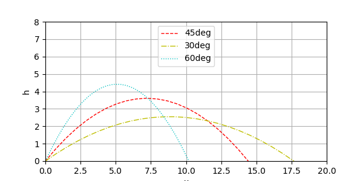
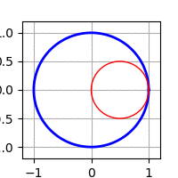
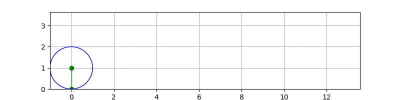
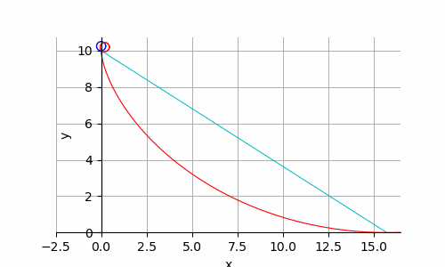

python绘制参数方程的动画
© 2018 *All rights reserved by liudx .:smile:
Python的matplotlib是一个功能强大的绘图库，可以很方便的绘制数学图形。官方给出了很多简单的实例，结合中文翻译的示例Tutorial，可以满足日常工作的大部分需求了。但是实际工作中，一些有趣的东西很难使用常规方程（笛卡尔坐标和极坐标）方式绘制，事实上，大部分工程上都是使用参数方程来描述曲线。本文给出一些参数方程绘制的实例，之后会扩展为动画形式绘制，可以看到这些复杂的方程是如何简单优美的绘制出来。
1 参数方程绘制
首先介绍下椭圆的参数方程：
$$ \begin{cases} x = a \cdot \cos(t)\\ y = b \cdot \sin(t) \end{cases} $$
其中$a,b$分别是椭圆的长轴、短轴。绘制椭圆的python代码如下:
import matplotlib.pyplot as plt
import numpy as np
fig = plt.figure()
ax = plt.gca()
#椭圆参数方程
r1 = 1.1
r2 = 1
t = np.linspace(0, np.pi*2, 1000) # 生成参数t的数组
x = r1 * np.cos(t)
y = r2 * np.sin(t)
plt.plot(x, y, color='blue', linewidth=2, label='ellipse')
plt.xlabel('x')
plt.ylabel('y')
plt.ylim(-2, 2)
plt.xlim(-1.5,1.5)
ax.grid()
plt.show()
结果如下:

下面我们来个复杂点的例子，绘制炮弹的弹道曲线（当然是理想情况的），我们先根据公式推算一把，首先我们设炮弹出口速度$v_0(m/s)$,向上仰角为$\theta$ °，时间为$t(s)$, 大炮的筒口初始坐标初始为(0,0)，则有：
$$ \begin{cases} x=v_0\cdot\sin(\theta)\cdot t \\ y=v_0\cdot\cos(\theta)\cdot t - v_0\cdot\cos(\theta)\cdot g \cdot t^2 \end{cases} $$
对应python代码為：
def Parabolic(v0, theta_x): # 模拟炮弹飞行曲线
g = 9.80665 # m/s^2
v0_x = v0*np.cos(theta_x)
v0_y = v0*np.sin(theta_x)
t_m = (v0_y / g) # 飞行时间
#h = g*t_m**2/2
t = np.linspace(0, v0_x * t_m * 2, v0*1000)
x = v0_x * t
y = v0_y *t - v0_y *g * t**2 / 2
return x,y
if __name__ == '__main__':
linestyles = ['-', '--', '-.', ':']
x1, y1 = Parabolic(100, np.deg2rad(45))
x2, y2 = Parabolic(100, np.deg2rad(30))
x3, y3 = Parabolic(100, np.deg2rad(60))
plt.plot(x1, y1, color='r', linewidth=1, linestyle="--",label='45deg')
plt.plot(x2, y2, color='y', linewidth=1, linestyle="-.", label='30deg')
plt.plot(x3, y3, color='c', linewidth=1, linestyle=":", label='60deg')
plt.xlabel('x')
plt.ylabel('h')
plt.xlim(0, 20)
plt.ylim(0, 8)
plt.legend(loc='upper center')
plt.show()
为了方便示意，我分别绘制了初速为$100m/s$时，仰角为45°、30°、60°的炮弹落地曲线：

验证了我们高中物理中的一个结论：这货不就是抛物线嘛。
2 动画animation
看完静态的参数方程，还是不过瘾，我们来做个动画玩玩。首先是绘制一个内旋轮，引用下这位老哥的例子：
import numpy as np
import matplotlib
import matplotlib.pyplot as plt
import matplotlib.animation as animation
fig = plt.figure(figsize=(6, 6)) # 图像大小
ax = plt.gca()
ax.grid()
ln1, = ax.plot([], [], '-', color='b', lw=2) # 注意逗号，取出plot数据:plot return A list of Line2D objects representing the plotted data.
ln2, = ax.plot([], [], '-', color='r', lw=1)
theta = np.linspace(0, 2*np.pi, 100) # 参数t的数组
r_out = 1 # 静态圆的半径
r_in = 0.5 # 动态圆的半径
def init():
ax.set_xlim(-2, 2)
ax.set_ylim(-2, 2)
x_out = [r_out*np.cos(theta[i]) for i in range(len(theta))]
y_out = [r_out*np.sin(theta[i]) for i in range(len(theta))]
ln1.set_data(x_out, y_out) # 静圆
return ln1, # 此处返回tuple
def update(i): # 每次回调时，传入索引`0~range(len(theta))`,注意repeat时索引会归0
x_in = [(r_out-r_in)*np.cos(theta[i])+r_in*np.cos(theta[j]) for j in range(len(theta))]
y_in = [(r_out-r_in)*np.sin(theta[i])+r_in*np.sin(theta[j]) for j in range(len(theta))]
ln2.set_data(x_in, y_in) # 动圆
return ln2,
ani = animation.FuncAnimation(fig, update, range(len(theta)), init_func=init, interval=30)
#ani.save('roll.gif', writer='imagemagick', fps=100)
plt.show()
看起来很不错，能动(这里发现了init函数可以绘制下静态的大圆ln1，update函数只对动圆ln2的plot对象数据进行更新)：

最后研究下旋轮线, 看看能否绘制出wiki页面上那个动画效果。先列出参数方程： $$ 旋轮线参数方程： \begin{cases} x = r\cdot(t-\sin t) \\ y = r \cdot (1-\cos t) \end{cases} \\ 圆心的坐标为:(t,r) $$ 经过观察摸索，发现需要绘制3部分，一个是滚动的圆，一个是摆线，还有个圆心到绘制曲线的支点。坐标都可直接从参数方程推算出来，不多说，直接上代码和注释吧：
#def wheel_line():
fig = plt.figure(figsize=(8,2))
ax = plt.gca()
ax.grid()
ln, = ax.plot([], [], 'o-', color='g', lw=1) # 圆心连线 @center -> curve
circle, = ax.plot([], [], '-', color='b', lw=1) # 滚动的圆
curve, = ax.plot([], [], '-', color='r', lw=1) # 摆线
curve_x, curve_y = [], []
r = 1
t = np.linspace(0, math.pi*2, 1000)
L = 4*np.pi*r
theta = np.linspace(0, L, 250)
def init():
ax.set_xlim(-r, L + r)
ax.set_ylim(0, L/4 + r/2)
ln.set_data([0,0], [0,1])
x_out = r*np.cos(t)
y_out = r*np.sin(t) + r
circle.set_data(x_out, y_out)
return circle,ln
def update(frame):
tt = theta[frame] # 获取参数t
x=r*(tt-np.sin(tt))
y=r*(1-np.cos(tt))
curve_x.append(x)
curve_y.append(y)
curve.set_data(curve_x, curve_y) # 更新摆线
if i == len(theta) - 1:
curve_x.clear()
curve_y.clear()
# update circle
x_out = r*np.cos(t) + tt
y_out = r*np.sin(t) + r
circle.set_data(x_out, y_out)
# new circle center @(tt,r)
ln.set_data([tt,x],[r,y])
return curve,circle,ln
ani = animation.FuncAnimation(fig, update, frames=range(len(theta)), init_func=init, interval=1)
ani.save('roll.gif', writer='imagemagick', fps=60)
plt.show()
大功告成:

旋轮线可以衍生出更复杂的最速降速曲线1 (从A到B)： $$ 假设轮径r，高度2r的自由落体参数方程： \\ F=\begin{cases} x = 0 \\ y = 2r-\dfrac{1}{2}gt^2，t\in[0,2\sqrt{\dfrac{r}{g}}] \end{cases} \\ 旋轮线参数方程： \\ C=\begin{cases} x = r\cdot(\theta-\sin \theta) \\ y = 2r-r \cdot (1-\cos \theta) \end{cases},其中\theta=t\sqrt{\dfrac{g}{r}},t\in[0,\pi\sqrt{\dfrac{r}{g}}]\\ \\ A\rightarrow B直线L的坡度夹角为\alpha=\arctan(\dfrac{2}{\pi}) \\ L=\begin{cases} x = \dfrac{1}{2}\sin(\alpha)\cos(\alpha)gt^2 \\ y = 2r-\dfrac{1}{2}\sin(\alpha)^2gt^2 \end{cases},其中t\in[0,\pi\sqrt{\dfrac{R\sqrt{4+\pi^2}}{g\sin(\alpha)}}]\\ \\ $$
# 计算高度S自由落体时间
def T(h,a):
return math.sqrt(2*h/a);
# ,自由落体‘TODO.最速降线brachistochrone 就是摆线
# https://www.bilibili.com/video/av6385842/?vd_source=93e3ebd011b2d2f92c2ab3da9b5eba71
# https://mathcurve.com/courbes2d/brachistochrone/brachistochrone.shtml
def free_fall():
fig = plt.figure(figsize=(5,3))
ax = plt.gca()
ax.set_aspect(1) # x/y 等比例
ax.xaxis.set_ticks_position('bottom')
ax.spines['bottom'].set_position(('data',0))
ax.yaxis.set_ticks_position('left')
ax.spines['left'].set_position(('data',0))
ax.spines['top'].set_color('none')
ax.spines['right'].set_color('none')
plt.xlabel('x')
plt.ylabel('y')
ax.grid()
L1, = ax.plot([], [], '-', color='c', lw=0.75) # 直线
F1, = ax.plot([], [], '-', color='r', lw=0.8) # 最速降线
free, = ax.plot([], [], '-', color='b', lw=1) # 自由落体 小球
cL, = ax.plot([], [], '-', color='c', lw=1) # 直线L 小球
cF, = ax.plot([], [], '-', color='r', lw=1) # 最速降线 小球
theta = np.linspace(0, np.pi*2, 100) # for ball
R = 5 # 半径
r_in = 0.25
angle = np.arctan(2/np.pi) # 直线坡度夹角
sin_k = np.sin(angle)
cos_k = np.cos(angle)
g = 9.8
L = math.sqrt(4+np.pi*np.pi) * R # 斜面长度
t = T(L, g*sin_k) # 沿着斜面下滑总时间。(sec)
tf = np.pi * math.sqrt(R/g) # 摆线一半时间
ts = np.arange(0, t, 0.04)
def init():
ax.set_xlim(-R/2, np.pi*R+r_in*3)
ax.set_ylim(0, 2*R+r_in*3)
# L is a line , y= 2R-2/pi*x
x_L = [R*t for t in theta]
y_L = [2*R - 2*x/np.pi for x in x_L]
L1.set_data(x_L,y_L )
# 最速降线brachistochrone
θ = [math.sqrt(g/R)*j for j in ts]
xf = R*(θ-np.sin(θ))
yf = 2*R+R*(np.cos(θ)-1)
F1.set_data(xf,yf)
return L1
def update(i):
t = ts[i]
# solve 自由落体
x = [r_in*np.cos(theta[j]) for j in range(len(theta))]
y = [2*R-g/2*t*t + r_in*np.sin(theta[j]) +r_in for j in range(len(theta))]
free.set_data(x,y)
# solve L 小球：
x_L = [g/2*sin_k*cos_k*t*t+r_in*np.cos(theta[j])+r_in*0.8 for j in range(len(theta))]
y_L = [2*R-g/2*sin_k*sin_k*t*t+r_in*np.sin(theta[j])+r_in*0.8 for j in range(len(theta))]
cL.set_data(x_L, y_L)
# solve fase speed line
θ = math.sqrt(g/R)*t
x_f = [R*(θ-np.sin(θ)) + r_in*np.cos(theta[j])+r_in*0.8 for j in range(len(theta))]
y_f = [2*R+R*(np.cos(θ)-1) + r_in*np.sin(theta[j])+r_in*0.8 for j in range(len(theta))]
cF.set_data(x_f,y_f)
return free,cF,cL
ani = animation.FuncAnimation(fig, update, range(len(ts)), init_func=init, interval=40)
ani.save('roll2circle.gif', writer='imagemagick', fps=25) # 注意1秒25fps间隔40ms，正好1 sec
plt.show()

3 后记
在摸索过程中，还是有很多坑需要注意的，最初那个摆线的例子，我没有计算好图形范围，画出来的圆是扁扁的，后来通过修改x/y比例 ax.set_aspect(1) # x/y 等比例为相同比例解决的；保存动画那个ani.save('roll.gif', writer='imagemagick', fps=60)总是报错，经过查找资料，解决方案是安装imagemagic，下载安装后第2节的例子都能顺利保存动图为gif。还有需要注意是的save函数里面的fps参数不能调太低，否则会出现动画卡顿的现象，太高又会出现动画速度很快的问题，这个参数需要配合frames即动画的总帧数，以及FuncAnimation里面的interval帧间隔时间参数(单位是ms)，总动画时间(秒)公式为：$frames * interval/1000+frames/fps$。
读完这篇文章，相信绘制参数方程和动画不是一件难事吧:smile:。